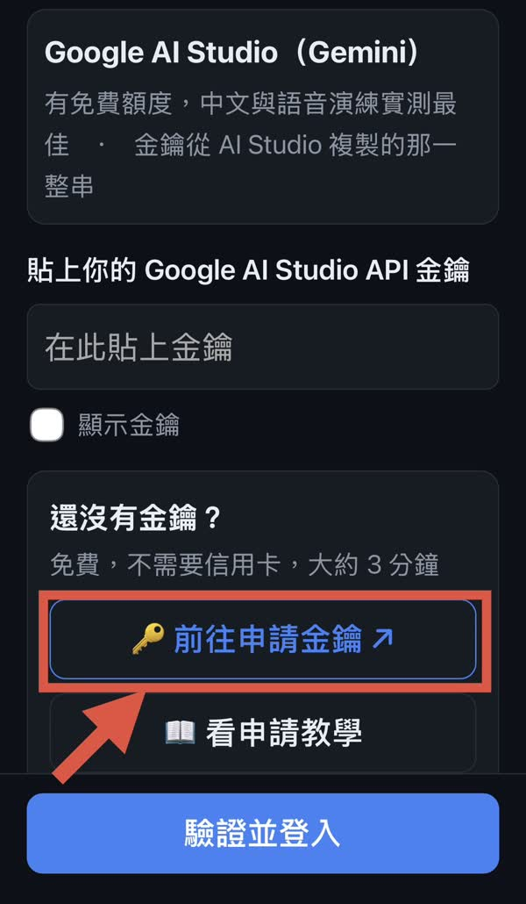
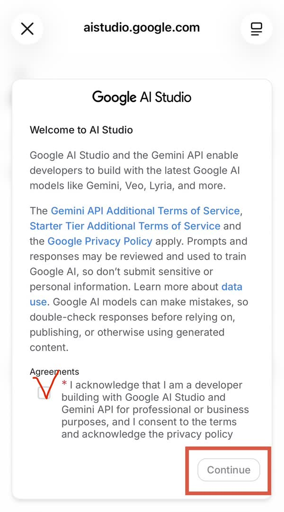
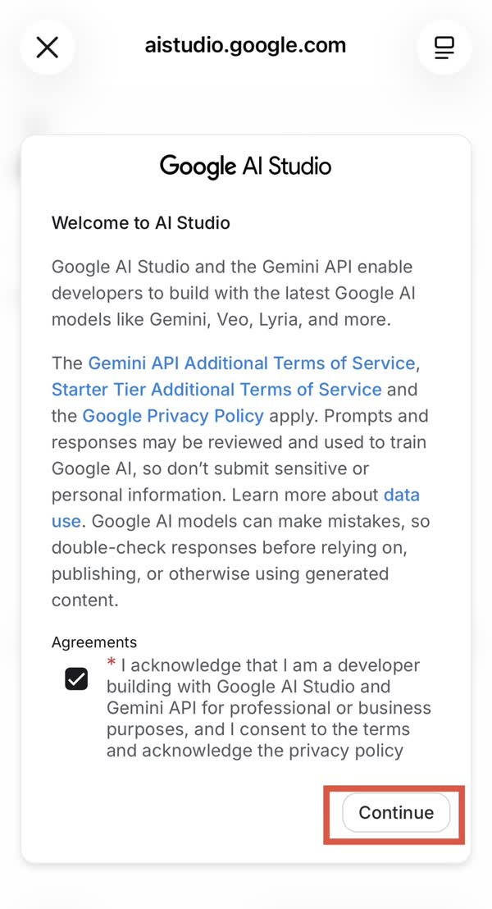
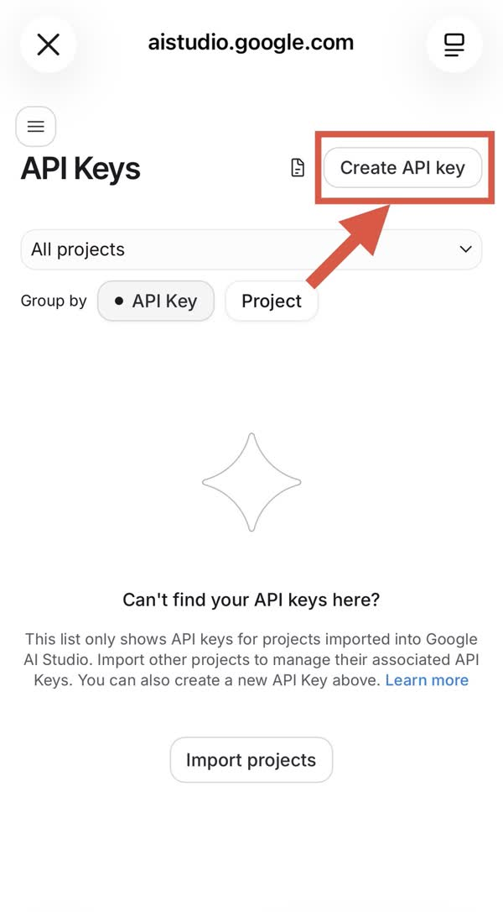
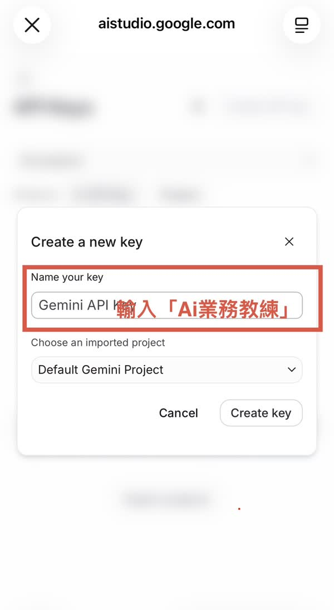
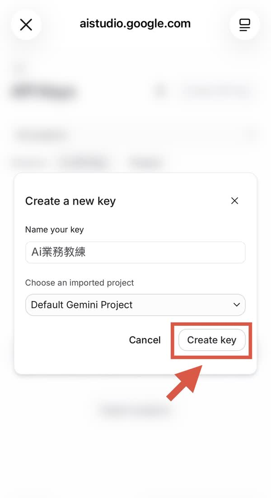
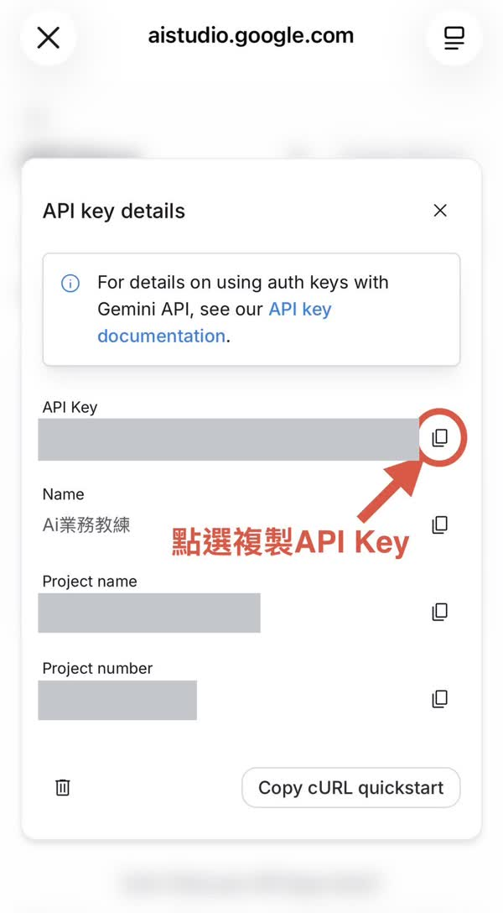
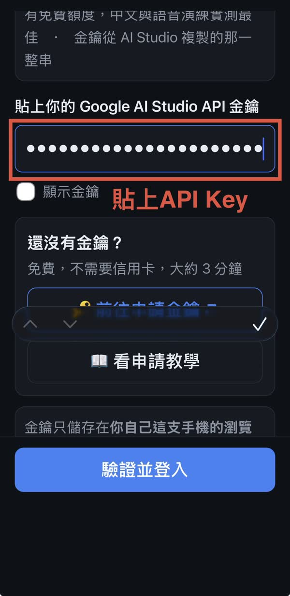

全程免費、不需要信用卡，大約 3 分鐘。
為什麼要自己申請？
因為 AI 用量是算在金鑰持有人的帳號上。每個人用自己的金鑰， 額度就不會互相搶，你的練習內容也只會經過你自己的帳號。
在 AI業務教練的登入畫面，找到「還沒有金鑰？」，按前往申請金鑰。 會先請你選擇 Google 帳號，選好後進入 Google AI Studio，不需要另外註冊。

或直接開啟 Google AI Studio →第一次進 AI Studio 會出現歡迎視窗，勾選下方的方框（同意使用條款）。

勾好之後，右下角的 Continue 才按得下去。

頁面標題是 API Keys。按右上角的 Create API key（中文介面是「建立 API 金鑰」）。

在 Name your key 輸入「AI業務教練」，方便以後認得是哪一把。
下面的專案維持預設的 Default Gemini Project 就好。

名字填好之後按 Create key。不需要開通付費、不需要綁信用卡。

建立好會出現 API key details。按 API Key 那一行最右邊的複製圖示， 整串金鑰就複製好了（截圖裡的金鑰已遮蔽）。

AIza——Google 已改用新的格式（例如 AQ. 開頭），看起來不一樣是正常的。
在「貼上你的 Google AI Studio API 金鑰」的框框裡點一下，選「貼上」。 金鑰會顯示成一排圓點，這是正常的；想確認的話可以勾「顯示金鑰」。

會花錢嗎？
Gemini 有每日免費額度，正常練習用不完，也不需要綁信用卡。
額度用完時 App 會自動改用較小的模型（不會壞，但回饋品質會降一些），隔天恢復。
金鑰會被別人看到嗎？
不會。金鑰只存在你這台裝置的瀏覽器裡，這個網站沒有後端可以收，
我們也看不到。共用裝置用完請按首頁下方的「登出／更換金鑰」。
我的練習內容會外流嗎？
你輸入的內容會送到 Google 的 AI 服務產生回應，這點跟你直接用 ChatGPT 一樣。
但請不要輸入客戶的真實姓名、電話或身分證號，演練只需要性別、年齡與大略背景。
上傳的文件與訓練紀錄只存在你自己的裝置。
可以跟同事共用一把金鑰嗎？
技術上可以，但不建議——一個人用完額度大家都不能用，而且免費額度本來就夠個人練習。
「金鑰無效」是什麼意思？
多半是兩種情況：複製時漏字（請用第 7 步的複製圖示），
或這把金鑰是舊格式（Google 自 2026 年 9 月起不再接受舊的 Standard key）。
最快的解法是回 AI Studio 重新建一把。
換手機要重新申請嗎？
不用。同一把金鑰可以在多台裝置使用，回 AI Studio 複製同一串貼上就好。
用同一個帳號登入的話，訓練紀錄會跟著過去；上傳的文件只存在原本的裝置，要重新上傳。
本教學所描述的畫面是 Google 的服務，Google 可能隨時調整介面文字與流程。 若實際畫面與此處不同，請以 Google AI Studio 上的說明為準。
‹ 回到 AI業務教練